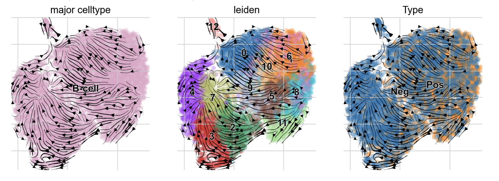
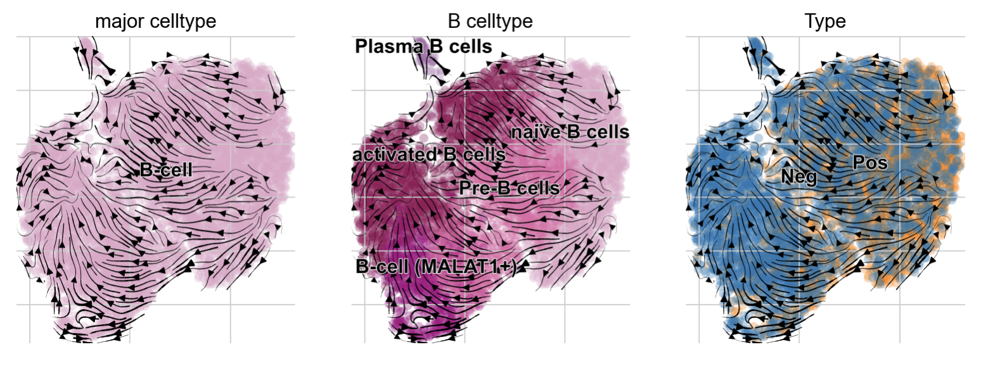
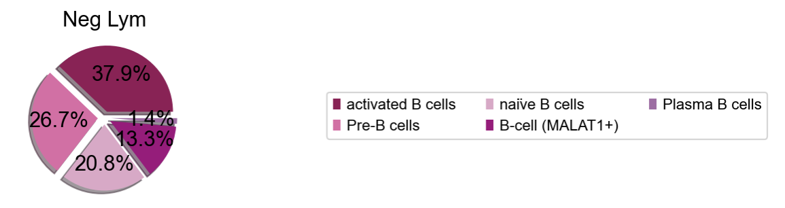

6-3. 细胞亚群分析
4. 细胞亚群分析-真实案例
在这里，我对B细胞亚群进行下游分析（基于乳腺癌淋巴结转移的B细胞数据）
4.1 细胞亚群分析
我们首先需要导入包，以及一些相关函数的准备
#导入包
import anndata
print('anndata(Ver): ',anndata.__version__)
import scanpy as sc
print('scanpy(Ver): ',sc.__version__)
import scltnn #非必需
print('scltnn(Ver): ',scltnn.__version__)
import matplotlib.pyplot as plt
import matplotlib
print('matplotlib(Ver): ',matplotlib.__version__)
import seaborn as sns
print('seaborn(Ver): ',sns.__version__)
import numpy as np
print('numpy(Ver): ',np.__version__)
import pandas as pd
print('pandas(Ver): ',pd.__version__)
import scvelo as scv
print('scvelo(Ver): ',scv.__version__)
import Pyomic
print('Pyomic(Ver): ',Pyomic.__version__)
#绘图参数设置
sc.settings.verbosity = 3 # verbosity: errors (0), warnings (1), info (2), hints (3)
sc.settings.set_figure_params(dpi=80, facecolor='white')
sc_color=['#7CBB5F','#368650','#A499CC','#5E4D9A','#78C2ED','#866017','#9F987F', '#E0DFED', '#EF7B77', '#279AD7',
'#F0EEF0', '#1F577B', '#A56BA7', '#E0A7C8', '#E069A6', '#941456', '#FCBC10', '#EAEFC5', '#01A0A7', '#75C8CC',
'#F0D7BC', '#D5B26C', '#D5DA48', '#B6B812','#9DC3C3', '#A89C92', '#FEE00C','#FEF2A1']
紧接着，我们导入之前标注好细胞类型的rna.h5ad文件，并选取其中的B细胞
adata=sc.read('../cellanno/rna_anno.h5ad')
#筛选
adata=adata[adata.obs['major_celltype']=='B-cell']
View of AnnData object with n_obs × n_vars = 5899 × 1945
obs: 'Type', 'initial_size_spliced', 'initial_size_unspliced', 'initial_size', 'domain', 'n_genes', 'leiden', 'n_counts', 'major_celltype'
var: 'gene_ids', 'feature_types', 'genome', 'Accession', 'Chromosome', 'End', 'Start', 'Strand', 'n_cells', 'highly_variable', 'highly_variable_rank', 'means', 'variances', 'variances_norm', 'mean', 'std', 'chrom', 'chromStart', 'chromEnd', 'name', 'score', 'strand', 'thickStart', 'thickEnd', 'itemRgb', 'blockCount', 'blockSizes', 'blockStarts', 'gene_id', 'gene_type', 'hgnc_id', 'havana_gene', 'tag', 'dell'
uns: 'Type_colors', 'dendrogram_leiden', 'hvg', 'leiden', 'leiden_colors', 'leiden_sizes', 'log1p', 'major_celltype_colors', 'neighbors', 'paga', 'pca', 'rank_genes_groups', 'umap'
obsm: 'X_glue', 'X_pca', 'X_umap'
varm: 'PCs', 'X_glue'
layers: 'Ms', 'Mu', 'ambiguous', 'counts', 'matrix', 'spliced', 'unspliced'
obsp: 'connectivities', 'distances'
我们对数据重新分类别，提取其中的B细胞亚群
sc.tl.pca(adata, n_comps=100, svd_solver="arpack")
sc.pp.neighbors(adata, use_rep="X_glue", metric="cosine",n_neighbors=15, random_state = 112)
sc.tl.leiden(adata)
sc.tl.paga(adata)
sc.pl.paga(adata, plot=False) # remove `plot=False` if you want to see the coarse-grained graph
sc.tl.umap(adata,init_pos='paga')
sc.pl.umap(adata,color='leiden')
输出结果
computing PCA
on highly variable genes
with n_comps=100
finished (0:00:01)
computing neighbors
finished: added to `.uns['neighbors']`
`.obsp['distances']`, distances for each pair of neighbors
`.obsp['connectivities']`, weighted adjacency matrix (0:00:00)
running Leiden clustering
finished: found 13 clusters and added
'leiden', the cluster labels (adata.obs, categorical) (0:00:00)
running PAGA
finished: added
'paga/connectivities', connectivities adjacency (adata.uns)
'paga/connectivities_tree', connectivities subtree (adata.uns) (0:00:00)
--> added 'pos', the PAGA positions (adata.uns['paga'])
computing UMAP
finished: added
'X_umap', UMAP coordinates (adata.obsm) (0:00:05)

我们接着构建velocity的动态调控过程网
scv.tl.recover_dynamics(adata,n_jobs=6)
scv.tl.velocity(adata, mode='dynamical')
scv.tl.velocity_graph(adata)
scv.pl.velocity_embedding_stream(adata, basis='umap',color=['major_celltype','leiden','Type'])
输出结果
recovering dynamics (using 6/8 cores)
Error displaying widget: model not found
finished (0:00:13) --> added
'fit_pars', fitted parameters for splicing dynamics (adata.var)
computing velocities
finished (0:00:00) --> added
'velocity', velocity vectors for each individual cell (adata.layers)
computing velocity graph (using 1/8 cores)
Error displaying widget: model not found
finished (0:00:01) --> added
'velocity_graph', sparse matrix with cosine correlations (adata.uns)
computing velocity embedding
finished (0:00:00) --> added
'velocity_umap', embedded velocity vectors (adata.obsm)

我们接着计算拟时序
scv.tl.latent_time(adata)
scv.pl.scatter(adata, color='latent_time', color_map='Reds', size=80)
输出结果
computing terminal states
identified 4 regions of root cells and 1 region of end points .
finished (0:00:00) --> added
'root_cells', root cells of Markov diffusion process (adata.obs)
'end_points', end points of Markov diffusion process (adata.obs)
computing latent time using root_cells as prior
finished (0:00:00) --> added
'latent_time', shared time (adata.obs)

然后，我们使用B细胞的字典，来对B细胞的细胞类型进行标注，并且使用t-test找出每一类leiden的marker基因用于辅助注释
#B细胞字典
res_marker_dict={
'naïve B cell':['IGHD', 'FCER2', 'TCL1A', 'IL4R'],
'memory B cell':['CD27','AIM2','TNFRSF13B'],
'Pre-B cell':['TMSB4X','TMSB10'],
'Breg': ['CD24','CD27'],
'(GC) B cell':[ 'SUGCT', 'MME', 'MKI67', 'AICDA'],
'IgG plasma cell':['JCHAIN'],
'IgA plasma cell':['CD38'],
'Follicular B Cell':['CD69','CD83'],
'activated B cells':['IGHA1'],
'Test':['SPN','MALAT1'],
}
sc.tl.dendrogram(adata,'leiden')
sc.pl.dotplot(adata, res_marker_dict, 'leiden', dendrogram=True,standard_scale='var')
输出结果
using 'X_pca' with n_pcs = 100
Storing dendrogram info using `.uns['dendrogram_leiden']`
WARNING: Groups are not reordered because the `groupby` categories and the `var_group_labels` are different.
categories: 0, 1, 2, etc.
var_group_labels: naïve B cell, memory B cell, Pre-B cell, etc.

#注意，这里也可以使用cosg来寻找marker基因
adata.uns['log1p']['base']=None
sc.tl.rank_genes_groups(adata, 'leiden', method='t-test')
sc.pl.rank_genes_groups_dotplot(adata,groupby='leiden',
cmap='Spectral_r',
standard_scale='var',n_genes=3)
输出结果
ranking genes
WARNING: It seems you use rank_genes_groups on the raw count data. Please logarithmize your data before calling rank_genes_groups.
finished (0:00:00)

最后，我们标注leiden对应的细胞类型，并上色
#leiden对应的细胞类型标注
cluster2annotation = {
'0': 'activated B cells',
'1': 'naïve B cells',
'2': 'Pre-B cells',
'3': 'B-cell (MALAT1+)',
'4': 'activated B cells',
'5': 'Pre-B cells',
'6': 'naïve B cells',
'7': 'activated B cells',
'8': 'naïve B cells',
'9': 'Pre-B cells',
'10': 'Pre-B cells',
'11': 'naïve B cells',
'12': 'Plasma B cells',
}
adata.obs['B_celltype'] = adata.obs['leiden'].map(cluster2annotation).astype('category')
#上色
type_color_B={
'naïve B cells':sc_color[13],
'Follicular B cells':sc_color[20],
'Pre-B cells':sc_color[14],
'activated B cells':sc_color[15],
'IgA+ Plasma B cells':sc_color[8],
'IgG+ Plasma B cells':sc_color[12],
'Plasma B cells':sc_color[12],
'B-cell':sc_color[13],
'B-cell (MALAT1+)':'#a3007d',
}
adata.uns['B_celltype_colors']=adata.obs['B_celltype'].cat.categories.map(type_color_B).values.tolist()
#绘制效果
ax=scv.pl.velocity_embedding_stream(adata, basis='umap',color=['major_celltype','B_celltype','Type'],
legend_align_text='y',show=False,)
plt.savefig("prop/cell_type.png",dpi=300,bbox_inches = 'tight')

然后，为了分析阴性淋巴结跟阳性淋巴结的细胞比例差异，我们计算了两种淋巴结中的细胞比例
#阳性淋巴结
import numpy as np
import matplotlib.pyplot as plt
from pylab import *
#mpl.rcParams['font.sans-serif']=['SimHei']
#mpl.rcParams['axes.unicode_minus']=False
labels=(adata[adata.obs['Type']=='Pos'].obs['B_celltype'].value_counts()/len(adata[adata.obs['Type']=='Pos'].obs)).index.tolist()
data=(adata[adata.obs['Type']=='Pos'].obs['B_celltype'].value_counts()/len(adata[adata.obs['Type']=='Pos'].obs)).values
b_color=pd.DataFrame(labels)[0].map(type_color_B).values
explodes=[i for i in [0.1]*len(labels)]
fig, ax = plt.subplots(figsize=(2,2))
#plt.axes(aspect=0.5)
plt.pie(x=data,labels=labels,autopct="%0.1f%%",labeldistance=None,
explode=explodes,shadow=True,colors=b_color)
plt.title('Pos Lym')
plt.savefig("prop/pos_prop.png",dpi=300,bbox_inches = 'tight')

#阴性淋巴结
import numpy as np
import matplotlib.pyplot as plt
from pylab import *
labels=(adata[adata.obs['Type']=='Neg'].obs['B_celltype'].value_counts()/len(adata[adata.obs['Type']=='Neg'].obs)).index.tolist()
#labels=[i for i in [' ']*5]
data=(adata[adata.obs['Type']=='Neg'].obs['B_celltype'].value_counts()/len(adata[adata.obs['Type']=='Neg'].obs)).values
b_color=pd.DataFrame(labels)[0].map(type_color_B).values
explodes=[i for i in [0.1]*len(labels)]
fig, ax = plt.subplots(figsize=(2,2))
#plt.axes(aspect=0.5)
plt.pie(x=data,labels=labels,autopct="%0.1f%%",labeldistance=None,
explode=explodes,shadow=True,colors=b_color)
plt.legend(bbox_to_anchor=(1.8, 0.7), ncol=3,fontsize=10)
plt.title('Neg Lym')
plt.grid(False)
plt.axis('off')
plt.savefig("prop/neg_prop.png",dpi=300,bbox_inches = 'tight')

除了使用扇形图外，我们还能用柱状图更加直观的感受细胞类型的比例，我们先构建一个pandas表格用于绘制柱状图
prop_pd1=pd.DataFrame(index=list(set(adata.obs['B_celltype'])))
prop_pd1['Cell']=prop_pd1.index.tolist()
prop_pd1['Values']=0
prop_pd1['Type']='Neg'
data=(adata[adata.obs['Type']=='Neg'].obs['B_celltype'].value_counts()/len(adata[adata.obs['Type']=='Neg'].obs))
prop_pd1.loc[data.index.tolist(),'Values']=[round(i,2) for i in data.values]
prop_pd2=pd.DataFrame(index=list(set(adata.obs['B_celltype'])))
prop_pd2['Cell']=prop_pd2.index.tolist()
prop_pd2['Values']=0
prop_pd2['Type']='Pos'
data=(adata[adata.obs['Type']=='Pos'].obs['B_celltype'].value_counts()/len(adata[adata.obs['Type']=='Pos'].obs))
prop_pd2.loc[data.index.tolist(),'Values']=[round(i,2) for i in data.values]
prop_pd=pd.concat([prop_pd1,prop_pd2])
prop_pd.index=range(len(prop_pd))
prop_pd
| Cell | Values | Type | |
|---|---|---|---|
| 0 | B-cell (MALAT1+) | 0.13 | Neg |
| 1 | Pre-B cells | 0.27 | Neg |
| 2 | naïve B cells | 0.21 | Neg |
| 3 | Plasma B cells | 0.01 | Neg |
| 4 | activated B cells | 0.38 | Neg |
| 5 | B-cell (MALAT1+) | 0.06 | Pos |
| 6 | Pre-B cells | 0.37 | Pos |
| 7 | naïve B cells | 0.40 | Pos |
| 8 | Plasma B cells | 0.00 | Pos |
| 9 | activated B cells | 0.16 | Pos |
随后我们分别为Neg与Pos指定颜色后绘制柱状图
type_color={
'Pos':'#9B7170',
'Neg':'#C65A50'
}
fig, ax = plt.subplots(figsize=(2,4))
sns.barplot(
data=prop_pd,
x="Values", y="Cell", hue="Type",
alpha=.6,palette=[type_color['Neg'],type_color['Pos']]
)
for i in ax.containers:
ax.bar_label(i,)
sns.move_legend(ax, "upper left", bbox_to_anchor=(1, 1))
plt.savefig("prop/prop.png",dpi=300,bbox_inches = 'tight')

除此之外，我们还可以分析细胞亚群的演变过程
scv.tl.paga(adata, groups='B_celltype',use_time_prior=False)
scv.pl.paga(adata, basis='umap', size=50, alpha=.1,
min_edge_width=2, node_size_scale=1.5)
输出结果
running PAGA
finished (0:00:00) --> added
'paga/connectivities', connectivities adjacency (adata.uns)
'paga/connectivities_tree', connectivities subtree (adata.uns)
'paga/transitions_confidence', velocity transitions (adata.uns)

到此，细胞亚群注释及相关的图表，我们就绘制完成了，我们保存一下
adata.write_h5ad('B_cell_anno_new.h5ad',compression='gzip')